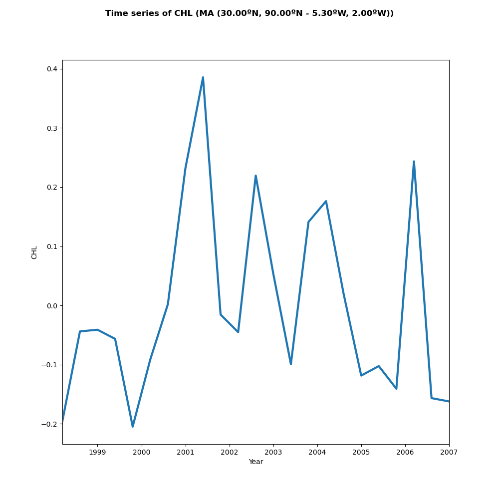
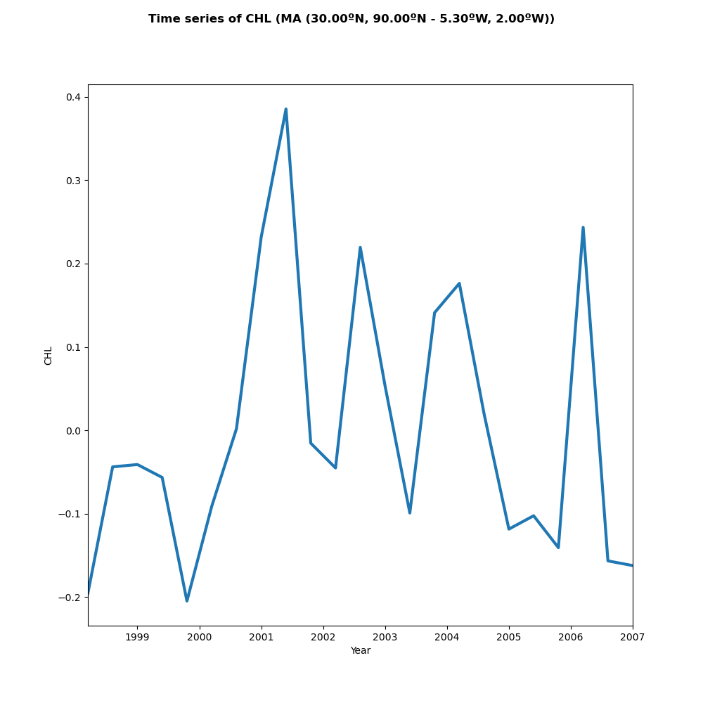

Usage#
Installation#
To use Spy4Cast, first install it using git:
To get the latest version:
Warning
The environment must be compatible with all the dependencies and Cartopy probably needs it to be 3.9 or lower
Note
You have to have installed git (Install Git)
Note
You have to have installed anaconda (Install Anaconda)
$ conda create -n <your-env-name> python=3.9
$ conda activate <your-env-name>
(<your-env-name>) $ conda install pip
(<your-env-name>) $ conda install cartopy
(<your-env-name>) $ pip install git+https://github.com/pabloduran016/Spy4Cast
Note
Cartopy has to be installed with conda because pip version does not work
Upgrade Version#
(<your-env-name>) $ pip install --upgrade git+https://github.com/pabloduran016/Spy4Cast
Warning
Sometimes the command above is not enough and you need to uninstall spy4cast
before upgrading (pip uninstall spy4cast)
Example#
Spy4Cast: Preprocess, MCA and Crossvalidation#
Here is an example of how you can use Spy4Cast API to RUN the full Spy4Cast methodology.
Click here to download
from spy4cast.dataset import Dataset
from spy4cast import spy4cast, Month, Region
from matplotlib import pyplot as plt
DATASET_DIR = '/Users/Shared/datasets/'
predictand_dataset = 'chl_1km_monthly_Sep1997_Dec2020.nc'
predictor_dataset = 'oisst_v2_mean_monthly.nc'
y = Dataset(name=predictor_dataset, dir=DATASET_DIR).open(var='sst')
y.slice(Region(5, 45, -90, -5, Month.JUN, Month.JUL, 1997, 2019), skip=0)
z = Dataset(name=predictor_dataset, dir=DATASET_DIR).open(var="CHL")
z.slice(Region(36, 37, -5.3, -2, Month.MAR, Month.APR, 1998, 2020), skip=0)
y_ppcessed = spy4cast.Preprocess(y)
z_ppcessed = spy4cast.Preprocess(z)
SAVED_DATA_DIR = 'saved_tna'
y_ppcessed.save('save_preprocessed_y_', dir=SAVED_DATA_DIR)
z_ppcessed.save('save_preprocessed_z_', dir=SAVED_DATA_DIR)
nm = 3
alpha = 0.1
mca = spy4cast.MCA(y_ppcessed, z_ppcessed, nm, alpha)
mca.save('save_mca_', dir=SAVED_DATA_DIR)
cross = spy4cast.Crossvalidation(y_ppcessed, z_ppcessed, nm, alpha)
cross.save('save_cross_', dir=SAVED_DATA_DIR)
Here is an example of how you can use Spy4Cast API to PLOT the previously ran Spy4Cast methodology.
Click here to download
from spy4cast import spy4cast
import matplotlib.pyplot as plt
PLOTS_DIR = 'plots'
SAVED_DATA_DIR = 'saved_tna'
y_ppcessed = spy4cast.Preprocess.load('save_preprocessed_y_', dir=SAVED_DATA_DIR)
z_ppcessed = spy4cast.Preprocess.load('save_preprocessed_z_', dir=SAVED_DATA_DIR)
mca = spy4cast.MCA.load('save_mca_', SAVED_DATA_DIR, dsy=y_ppcessed, dsz=z_ppcessed)
cross = spy4cast.Crossvalidation.load('save_cross_', SAVED_DATA_DIR, dsy=y_ppcessed, dsz=z_ppcessed)
# FAST PLOTS
y_ppcessed.plot(save_fig=True, selected_year=2005, dir=PLOTS_DIR, name='sst-2005.png')
z_ppcessed.plot(cmap='viridis', selected_year=2006, dir=PLOTS_DIR, name='chl-2006.png')
mca.plot(save_fig=True, cmap='viridis', dir=PLOTS_DIR, name='mca-sst-chl.png')
cross.plot(save_fig=True, dir=PLOTS_DIR, name='crossvalidation-chl-sst.png')
cross.plot_zhat(2005, dir=PLOTS_DIR, name='zhat-2005.png')
cross.plot_zhat(2006, dir=PLOTS_DIR, name='zhat-2006.png')
cross.plot_zhat(2007, dir=PLOTS_DIR, name='zhat-2007.png')
# Show all the created plots
plt.show()
Climatology#
Here is an example of how you can use Spy4Cast API to plot the climatology of a given .nc dataset
from spy4cast.meteo import Clim
from spy4cast import Month, Region, Dataset
# Define constants ---------------------------------------------------------------------------------- #
DATASET_DIR = '/Users/Shared/datasets/'
PLOTS_DIR = 'plots'
PLOT_DATA_DIR = 'data-clim'
chl_1km_monthly_Sep1997_Dec2020 = 'chl_1km_monthly_Sep1997_Dec2020.nc'
CHL = 'CHL'
chl_region = Region(36, 37, -5.3, -2, Month.MAR, Month.APR, 1998, 2020)
ds = Dataset(chl_1km_monthly_Sep1997_Dec2020, DATASET_DIR).open(CHL).slice(chl_region)
map_clim = Clim(ds, 'map')
map_clim.save('map_climatology', PLOT_DATA_DIR)
map_clim = Clim.load('map_climatology', PLOT_DATA_DIR, type='map')
map_clim.plot(show_plot=True, save_fig=True, name='clim-map-example.png', cmap='jet')
ts_clim = Clim(ds, 'ts')
ts_clim.save('ts_climatology', PLOT_DATA_DIR)
ts_clim = Clim.load('ts_climatology', PLOT_DATA_DIR, type='ts')
ts_clim.plot(show_plot=True, save_fig=True, name='clim-ts-example.png')
Output:


Anomaly#
Here is an example of how you can use Spy4Cast API to plot the anomaly of a given .nc dataset
from spy4cast.meteo import Anom
from spy4cast import Month, Region, Dataset
# Define constants ---------------------------------------------------------------------------------- #
DATASET_DIR = '/Users/Shared/datasets/'
PLOTS_DIR = 'plots'
PLOT_DATA_DIR = 'data-anom'
chl_1km_monthly_Sep1997_Dec2020 = 'chl_1km_monthly_Sep1997_Dec2020.nc'
CHL = 'CHL'
chl_region = Region(30, 90, -5.3, -2, Month.MAR, Month.APR, 1998, 2020)
ds = Dataset(chl_1km_monthly_Sep1997_Dec2020, DATASET_DIR).open(CHL).slice(chl_region)
map_anom = Anom(ds, 'map')
map_anom.save('map_anomaly', PLOT_DATA_DIR)
# map_anom = Anom.load('map_anomaly', PLOT_DATA_DIR, type='map')
map_anom.plot(show_plot=True, save_fig=True, year=1999, name='anom-map-example.png', cmap='jet')
ts_anom = Anom(ds, 'ts')
ts_anom.save('ts_anomaly', PLOT_DATA_DIR)
# ts_anom = Anom.load('ts_anomaly', PLOT_DATA_DIR, type='ts')
ts_anom.plot(show_plot=True, save_fig=True, name='anom-ts-example.png')
Output:
 

{kind=link}